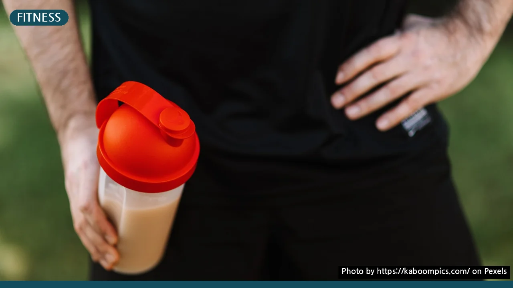
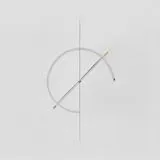

내 몸에 맞는 단백질 보충제 고르기: WPC vs WPI 완벽 비교
사진: https://kaboompics.com/ / Pexels (무료 이미지, 출처 표기)
단백질 보충제를 사려고 검색해보면 WPC, WPI 등 알 수 없는 영어 약자가 가득해 당황스럽기 마련입니다. 남들이 좋다고 추천하는 제품을 무작정 샀다가 배탈이 나거나 돈만 낭비하는 경우도 흔히 발생합니다.
내 몸의 체질과 운동 목적에 맞는 단백질 보충제를 똑똑하게 선택할 수 있도록 핵심 종류의 차이점과 구체적인 비교 기준을 정리해 드립니다.
1. 단백질 보충제 핵심 종류 4가지 비교
보충제 패키지에서 흔히 볼 수 있는 영어 약자들은 단백질을 추출하고 가공하는 방식에 따라 분류한 것입니다. 가장 대표적인 4가지 종류는 다음과 같습니다.
- WPC (농축유청단백): 우유에서 치즈를 만드는 과정에서 나오는 액체(유청)를 농축한 기본 단백질입니다.
- WPI (분리유청단백): WPC에서 지방과 유당(우유에 함유된 당분)을 미세하게 필터링하여 단백질 순도를 높인 형태입니다.
- WPH (가수분해유청단백): 유청단백에 소화 효소를 넣어 단백질을 아주 미세한 입자로 미리 분해해 둔 형태입니다.
- ISP (분리대두단백): 대두(콩)에서 단백질만 추출한 대표적인 식물성 단백질입니다.
2. 유당불내증이 있다면? 내 몸에 맞는 종류 고르는 법
우유나 라떼를 마셨을 때 속이 더부룩하거나 설사를 하는 증상을 유당불내증(우유 속 유당을 분해하는 효소가 부족해 겪는 소화 장애)이라고 합니다. 이 증상이 있다면 보충제 선택에 매우 신중해야 합니다.
가장 대중적인 WPC는 가성비가 좋지만 유당이 남아있어 유당불내증이 있는 분들에게 복통을 유발할 수 있습니다. 반면 WPI는 가공 과정에서 유당을 대부분 제거했기 때문에 속 편하게 단백질을 섭취할 수 있습니다.
만약 동물성 단백질 자체가 체질에 맞지 않거나 완전한 비건 식단을 지향한다면 식물성 원료인 ISP를 선택하는 것이 가장 안전한 대안입니다.
3. 구매 전 반드시 체크해야 할 3가지 기준
단백질 보충제를 고를 때는 브랜드 인지도 외에도 영양 성분표를 꼼꼼하게 따져보아야 쓸데없는 지출을 막을 수 있습니다.
- 아미노산 스코어 확인: 아미노산 스코어는 식품의약품안전처에서 단백질의 품질을 평가하는 객관적인 지표입니다. 이 점수가 최소 85점 이상(건강기능식품 기준)인 제품을 고르는 것이 좋습니다.
- 단백질 실제 함량 체크: 제품 1회 제공량당 순수 단백질이 몇 그램(g) 함유되어 있는지 확인하세요. 한 번 먹을 때 20~25g 수준의 단백질이 들어있는 제품이 1회 섭취량으로 가장 이상적입니다.
- 감미료 및 첨가물 유무: 너무 자극적인 초콜릿 맛이나 딸기 맛 제품은 인공 감미료와 당류 함량이 높을 수 있으므로 성분표의 감미료 비율을 체크하세요.
4. 과다 섭취 시 우려되는 부작용과 주의사항
단백질을 많이 먹는다고 해서 모두 근육으로 가는 것은 아닙니다. 신체가 한 번에 흡수할 수 있는 단백질 양에는 한계가 있으며, 초과분은 신장과 간에 부담을 주어 피로를 유발할 수 있습니다.
특히 신장 기능이 약하신 분들은 고단백 식단이나 보충제 섭취가 증상을 악화시킬 수 있으므로, 반드시 전문의와 상담을 거친 후 섭취 여부를 결정해야 합니다. 건강한 성인이라도 하루 권장 섭취량(일반 기준 몸무게 1kg당 1.0~1.2g, 근력 운동가 기준 1.5~2.0g)을 초과하지 않도록 조절하는 습관이 중요합니다.
🔗 이 글도 함께 보면 좋아요: 한방 스파 vs 일반 스파 완벽 비교: 내 몸엔 어떤 쪽이 맞을까?
관련 추천 상품
이 포스팅은 쿠팡 파트너스 활동의 일환으로, 이에 따른 일정액의 수수료를 제공받습니다.
자주 묻는 질문(FAQ) (탭하면 펼쳐져요)
Q1. 단백질 보충제는 운동을 하지 않는 날에도 먹어야 하나요?
A. 네, 단백질은 매일 일정량 이상 필요하므로 운동을 쉬는 날에도 평소 식사에서 단백질이 부족하다면 보충제로 채워주는 것이 좋습니다.
Q2. 우유를 마시면 설사를 하는데 어떤 보충제를 먹어야 하나요?
A. 유당이 대부분 제거된 WPI(분리유청단백)나 식물성 단백질인 ISP(분리대두단백)를 선택하시는 것이 좋습니다.
Q3. 하루 권장 단백질 섭취량은 얼마인가요?
A. 일반 성인은 몸무게 1kg당 약 1.0g, 꾸준히 근력 운동을 하시는 분은 1.5~2.0g 섭취를 권장합니다.
한눈에 보는 상품 목록

WPC (농축유청단백질)
단백질 함량 80% 내외로 가성비가 훌륭하며 근육 성장에 대중적으로 쓰입니다.
WPI (분리유청단백질)
유당을 미세하게 필터링하여 우유를 먹으면 배가 아픈 사람에게 적합합니다.
WPH (가수분해유청단백질)
단백질을 미세하게 분해하여 소화 흡수 속도를 극대화한 종류입니다.
ISP (분리대두단백질)
대두에서 추출한 식물성 단백질로 비건이거나 유제품 알레르기가 있는 분에게 좋습니다.